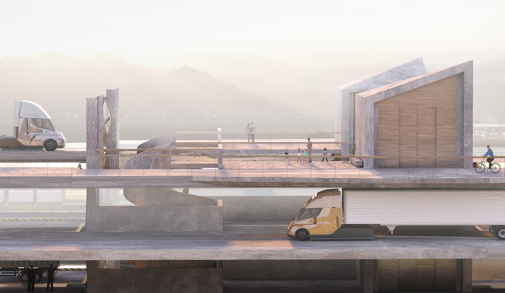

SYNC Construct A
Advanced Studio 6 "Everything must scale"
Columbia GSAPP
Critic: Michael Bell
2021
Early sociologists reflected that our society was a self-contained and self-regulating
semiotic system whose elements or actors are defined by relationships with other elements
within that system. To them, the structure of the network they lived in (at the beginning
of the industrial revolution) was imposed by the same actors participating in that system.
Limitations that essentially made them cogs in the wheel of industrialization and
densification. However, within this fate lies moments of synchrony and of the harmonious,
along with the dynamic.
My intentions for a future truck stop is in the celebration of the progressive diachrony
found in human made machines and tangentially, in the way those machines interact with
human actors to make our world run the way it might tomorrow.
We began this semester looking into both an anachronic vision of America’s past, littered
throughout the nation, paired with an analysis of how today’s gas stations and truck stops
work. Looking deeper into the machinations of the pumps, the levers, the shops and the
interactivity, I understood the gas station today as a vernacular consistent throughout
the nation. The tectonics and the instruments are the same, a product inherent to our mass
manufacturing and industrialized market. Those principles are found within the powerful
machines that pull the trailers and allow for cross-country shipments.
The gears and pistons that revolutionized the 20th century work in a rhythmic tempo, an
unending procession of progress from point A to B. I was incredibly impressed by the diesel
engine, and through drawing it in diagram, found this mathematic of parts that act in tandem
within the overall machine.
Now transitioning to our site, the Tahoe-Reno Industrial Center. The only access points to the
main highway I-80 are two interchanges spread about 4 miles apart. With the development of an
increasing number of warehouses and manufacturing plants in this industrial center, the
congestion becomes increasingly severe along those bottlenecks.
So it’s this main interchange that I believe can be a testing ground for a new prototype of the
truck stop.
The SYNC construct intends to be a 1500 ft long truck stop that is implanted onto the
continuum of the highway system. The construct forms a loop, with parking platforms spaced
along the central void where packages are transported from the industrial center through the
use of elevated maglev rails.
Trucks are expected to offload and load within this construct, which acts as both a nexus for the
warehouses beyond as well as the final destination for incoming trucks. The construct contains 3
levels. The first 2 levels act as truck stops for loading and reloading, while the top level is the
“promenade” where trucks either go for maintenance or recharging. The promenade also holds numerous
amenities and entertainment for truck drivers and visitors.
The platforms rotate along rails depending on where the truck needs to go, while the maglev shuttles
bring the packages and drop them off directly into the trailer. The wind turbines at the center take
advantage of aerodynamic forces created by passing shuttles, using the rushing wind to power themselves
and other minor electrical equipment.
As the current infrastructure is already nearing max capacity, the SYNC construct is to be a new
prototype for a more efficient logistical system that can achieve levels of scale suitable for the
Tahoe-Reno Industrial Center.
Ultimately, the construct is a machine that merges synchrony with procession, bridging the
structuralist impression of the static with the dynamism and rhythm of an efficient order.